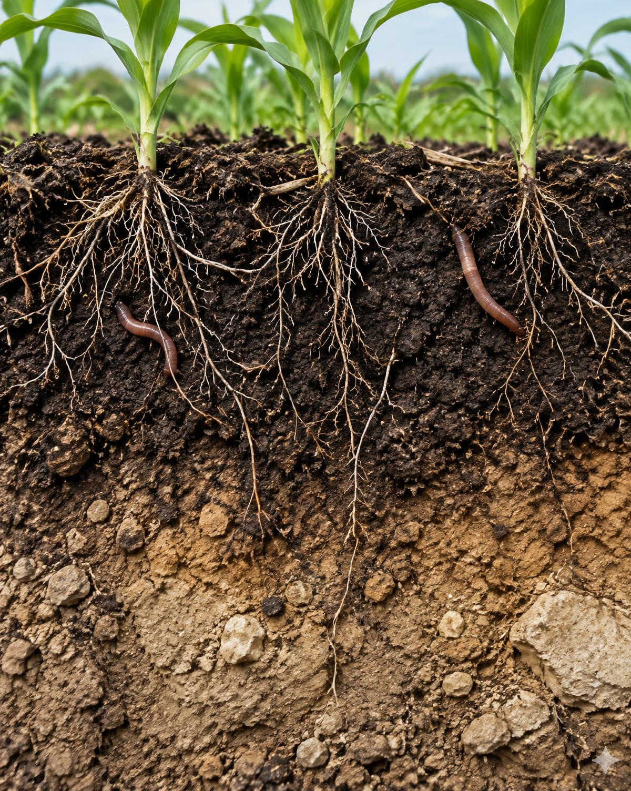
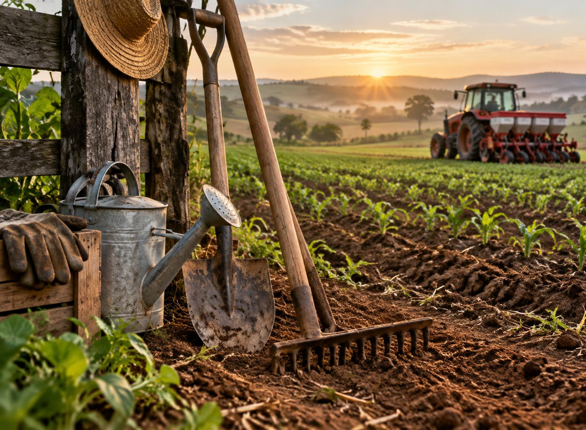
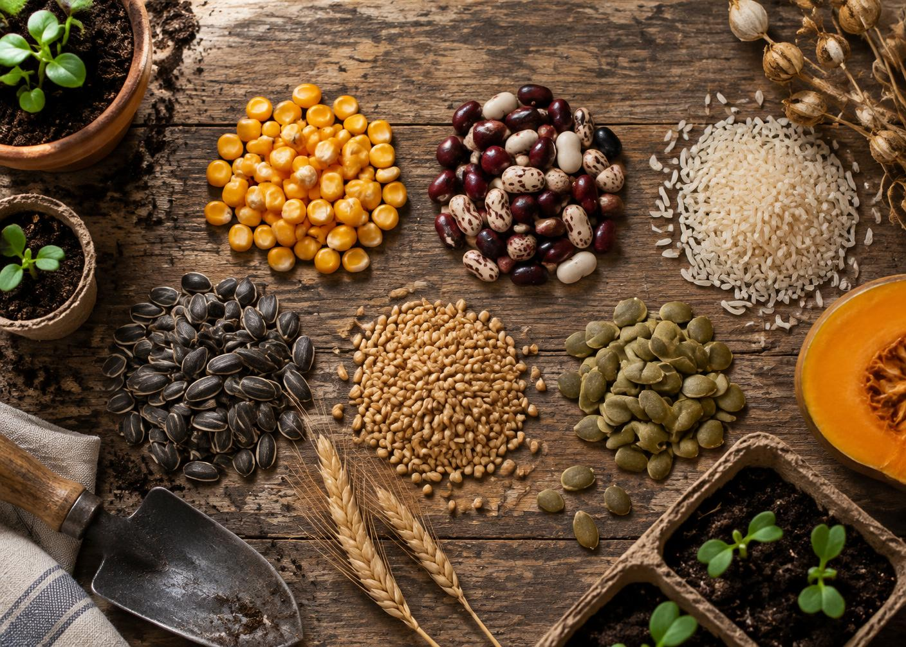

Arenoso
Grãos maiores, sensação áspera, grande drenagem e aeração. Perde água e nutrientes rapidamente; pede matéria orgânica e irrigações menores e frequentes.
Boas opções
- Mandioca
- Amendoim
- Melancia
Da vida invisível do solo à colheita: conhecimento, cuidado e prática para cultivar com responsabilidade.
Minerais, matéria orgânica, água, ar e bilhões de organismos formam a base que sustenta, nutre e hidrata as plantas.
Os 5% restantes são matéria orgânica; as proporções mudam conforme o tipo e a umidade do solo.

Raízes encontram sustentação, água, oxigênio e sais minerais nos poros do solo.
Pelos radiculares absorvem água e íons minerais. O xilema os leva às folhas. Ali, clorofila e luz transformam água e gás carbônico em glicose, liberando oxigênio. A planta usa essa energia para formar raízes, caules, flores, frutos e sementes.
Fotossíntese, em palavras: gás carbônico + água + energia luminosa → glicose + oxigênio. Os minerais não “viram alimento” sozinhos: participam de enzimas, proteínas, clorofila e do equilíbrio da planta.
Nitrogênio favorece folhas e proteínas; fósforo, energia, raízes e sementes; potássio, equilíbrio hídrico e resistência.
Cálcio estrutura células; magnésio integra a clorofila; enxofre participa de aminoácidos.
Necessários em doses pequenas, mas indispensáveis. Excesso também pode intoxicar.
Grãos maiores, sensação áspera, grande drenagem e aeração. Perde água e nutrientes rapidamente; pede matéria orgânica e irrigações menores e frequentes.
Partículas muito finas, pegajoso quando molhado. Retém água e nutrientes, mas pode compactar e encharcar; cobertura e drenagem são essenciais.
Mistura equilibrada de areia, silte e argila. É fértil, retém umidade sem perder aeração e costuma ser o mais versátil para cultivo.
Composto curtido, esterco bem tratado e adubos verdes liberam nutrientes aos poucos, agregam o solo, aumentam retenção de água e alimentam microrganismos.
Quando usar: na preparação do canteiro e continuamente, conforme análise e necessidade da cultura.
Fertilizantes concentrados corrigem deficiências com rapidez. A fórmula e a dose devem seguir análise de solo e recomendação agronômica.
Quando usar: no plantio ou cobertura, na dose, local e época corretos. Excesso saliniza, polui e desperdiça.
Alternar famílias e sistemas radiculares — por exemplo milho, feijão e uma cobertura — quebra ciclos de pragas, diversifica raízes e reduz o esgotamento.
Quando usar: planejar a cada safra; incluir leguminosas para contribuir com nitrogênio via simbiose.
Solo coberto, raízes diversas e adubação orientada: fertilidade é construção, não improviso.
Erosão é a remoção da camada superficial fértil pela chuva, enxurrada ou vento. Sem proteção, leva matéria orgânica, sementes e nutrientes, assoreia rios e abre sulcos e voçorocas.
Plantar acompanhando as curvas do relevo reduz a velocidade da água. Terraços interceptam enxurradas; raízes e palhada amortecem gotas de chuva e aumentam infiltração. Evite solo descoberto e fogo.

Arado revolve; grade quebra torrões e nivela; escarificador rompe compactação com menor revolvimento.
Trator fornece potência; semeadora-adubadora deposita sementes e adubo; pulverizador aplica produtos com calibração.
Colheitadeira corta, trilha e separa grãos. Sensores, piloto automático e drones ajudam a mapear e aplicar com precisão.

Escolha três espécies ou variedades e use exatamente 100 sementes de cada lote.
Fórmula: germinação (%) = plântulas normais ÷ sementes testadas × 100.
| Lote / variedade | 3º dia | 5º dia | 7º dia | Observações |
|---|---|---|---|---|
| 1. __________________ | ____% | ____% | ____% | ____________________ |
| 2. __________________ | ____% | ____% | ____% | ____________________ |
| 3. __________________ | ____% | ____% | ____% | ____________________ |
“Daninha” descreve uma planta crescendo onde não é desejada. Primeiro identifique; depois impeça sementes, reduza competição e escolha o método de menor impacto.
Gramínea anual. Arranque jovem com raiz, cubra o solo e evite sua produção de sementes.
Gramínea de rápida infestação. Capina antes do florescimento, rotação e cobertura densa.
Perene com tubérculos subterrâneos. Não fragmente o sistema; sombreie, repita capinas e remova tubérculos.
Folhas largas e muitas sementes. Capine cedo, use palhada e não deixe florescer.
Trepadeira que enrola nas culturas. Retire jovem, antes de frutificar; faça rotação.
Sementes aderentes e ciclo rápido. Arranque antes da floração e mantenha bordas limpas.
Euphorbia de látex irritante. Use luvas, arranque jovem e mantenha cobertura.
Folha larga com látex. Controle cedo e evite sementes; rotação ajuda.
Raiz resistente e caule fibroso. Capina com remoção da raiz e competição por cobertura.
Produz sementes levadas pelo vento. Controle em roseta, use cobertura e não permita florescimento.
Inspecionar folhas, raízes e armadilhas; registrar população e dano.
Solo saudável, diversidade, sementes sadias, higiene e época adequada.
Priorizar métodos culturais, mecânicos e biológicos.
Usar químico seletivo só quando necessário, com técnico, e medir o resultado.
A previsão ajuda a escolher janela de plantio, programar irrigação, proteger-se de geada e vento, evitar pulverização antes da chuva e colher com umidade adequada.
O Instituto Nacional de Meteorologia oferece previsão, avisos, mapas e dados de estações oficiais.
portal.inmet.gov.brO sistema da Embrapa apresenta monitoramento agrometeorológico e informações voltadas ao campo.
agritempo.gov.brAves insetívoras consomem lagartas, gafanhotos e outros invertebrados. Corujas e seriemas podem capturar pequenos vertebrados; urubus removem carcaças; sabiás e outras espécies dispersam sementes. Algumas também consomem grãos ou frutos — o valor ecológico depende da espécie, da época e do equilíbrio do ambiente.
Boa prática: preservar árvores, cercas vivas e água limpa oferece abrigo sem alimentar artificialmente. Observe com guia regional, anote comportamento e evite ninhos. O controle de pragas deve proteger aves e outros inimigos naturais.
A agricultura é a atividade de cultivar a terra para produzir alimentos, fibras, óleos, plantas medicinais e matérias-primas. Ela começa muito antes de a semente tocar o solo: envolve conhecimento do clima, escolha de variedades, conservação da água, análise da fertilidade e planejamento. Continua depois da colheita, com secagem, armazenamento, transporte, beneficiamento e comercialização. Por isso, a agricultura conecta a vida no campo à mesa, à indústria e às cidades.
Seu valor mais evidente é alimentar a população. Arroz, feijão, milho, mandioca, frutas, hortaliças e inúmeros outros produtos sustentam dietas e tradições culturais. O campo também fornece algodão para tecidos, cana para açúcar e etanol, madeira de cultivos responsáveis, borracha, café, cacau e ingredientes usados em medicamentos e cosméticos. Em cada cadeia trabalham produtores, técnicos, pesquisadores, transportadores, comerciantes e muitas famílias.
A agricultura familiar tem papel especial na diversidade de alimentos e na economia local. Cooperativas ajudam pequenos produtores a comprar insumos, receber assistência, armazenar e vender em conjunto. Já a pesquisa agrícola desenvolve sementes, práticas e equipamentos adaptados às diferentes regiões. Máquinas modernas, sensores e previsões meteorológicas podem elevar a precisão; ferramentas simples continuam essenciais em hortas e pequenas áreas.
Produzir, porém, exige responsabilidade. Solo sem cobertura pode ser perdido pela erosão; uso inadequado de água reduz rios e aquíferos; fertilizantes e defensivos aplicados sem orientação podem contaminar pessoas e o ambiente. A boa agricultura protege nascentes e matas ciliares, mantém o solo vivo, usa rotação de culturas, reduz desperdícios e aplica o manejo integrado de pragas. Também respeita trabalhadores, animais e comunidades.
Conhecer agricultura é compreender dependências que nem sempre vemos. Cada colheita resulta da interação entre solo, sol, água, biodiversidade, ciência e trabalho humano. Aprender a plantar desenvolve paciência, observação e serviço: não se controla a natureza, coopera-se com seus ciclos. Quando conserva recursos e distribui seus benefícios com justiça, a agricultura não apenas produz uma safra; ela cuida da possibilidade das próximas.
Escolha espécies adequadas à época e ao espaço — por exemplo, alface, rabanete, feijão e milho. Participe do plantio, cultivo e colheita; este requisito precisa registrar experiência real.
Visite uma cooperativa, sindicato, órgão de extensão rural, secretaria de agricultura ou instituição de pesquisa. Descubra como oferecem assistência técnica, crédito, compras coletivas, armazenamento, capacitação e acesso ao mercado.
Observe preparo, plantio, irrigação, manejo, colheita e armazenamento. Peça autorização antes de fotografar e registre quais decisões o agricultor toma diante do clima e dos problemas da lavoura.